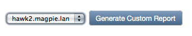
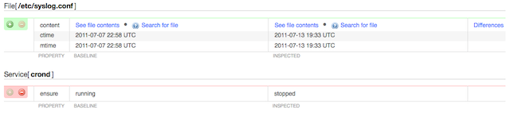
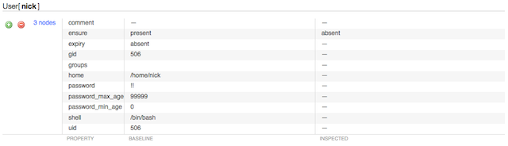
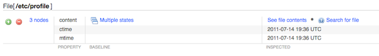
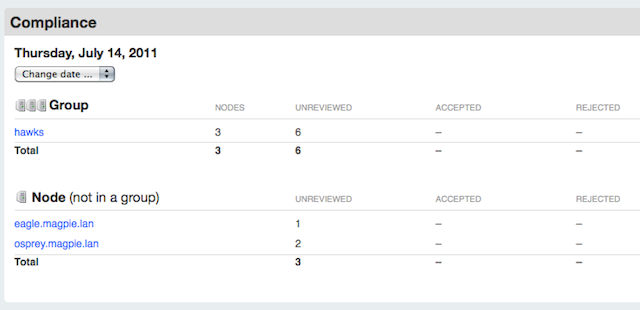
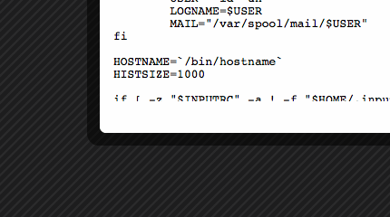
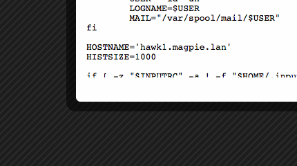

Puppet Dashboard Baseline Plugin — Interface and Usage
This documentation does not refer to a released product.
For documentation of the compliance features released in Puppet Enterprise 1.2, please see the Puppet Enterprise manual.
This chapter describes the compliance plugin UI and demonstrates its use.
Navigation
- Introduction and Workflow
- Bootstrapping
- Interface
- Internals
Compliance Pages
The baseline compliance pages are all reached from the “Compliance” link in Dashboard’s header menu.
Every compliance page shows information for a single day, and contains a date changer drop-down for changing the view. When navigating by links, the last selected date is persistent.

Main Summary
The main summary page (baseline/compliance) shows a single day’s comparison results, with aggregate summaries for grouped nodes and individual summaries for groupless nodes.
Individual Node Page
Individual node pages show one node’s off-baseline inspection results for a single day. You can accept or reject changes from this page.
Links to groupless nodes are displayed on the main summary page. To see the individual details of a node which is in at least one group, use the “Individual Differences” tab from its group page.
Group Page
Group pages show the collected differences for a group of nodes. Two tabs are available: You can use the “Common Differences” tab to approve and reject aggregate changes en masse, or you can use the “Individual Differences” tab to access node pages and act individually.
Groups are one of Dashboard’s core constructs, and nodes can be added to and removed from groups with Dashboard’s standard node view.
Although Dashboard allows groups to contain other groups, a compliance group page will only list nodes that are direct children of that group.
Changes to Core Dashboard Pages
The compliance plugin also adds new content and controls to Dashboard’s core group pages.
Each group page will now have a compliance summary in its node information section. Additionally, the core group pages will have a control for generating custom reports.

Reviewing Changes
To audit changes, first scan the day’s node and group summaries to see which nodes have unreviewed changes.
Once you’ve seen the overview, you can navigate to any pages with unreviewed changes. If there are any unreviewed changes on previous days, there will be a warning next to the date changer drop-down, and the drop-down will note which days aren’t fully reviewed.
Changes can be accepted or rejected. Accepted changes will become part of the baseline for the next day’s comparisons. Rejecting a change does nothing, and if the change isn’t reverted, it will appear as a difference again on the next day’s comparisons.
When accepting multiple days’ changes to the same resource, the change most recently accepted by the user will win.
Reviewing Individual Nodes
Changes to individual nodes are straightforward to review: navigate to the node’s page, view each change, and use the green plus and red minus buttons when you’ve decided whether the change was legitimate.

Each change is displayed in a table of attributes, with the approved state on the left and the inspected state on the right. If you have enabled filebucket viewing, you’ll see links for viewing the original and modified contents of any changed files, as well as a “differences” link for showing the exact changes.
You can also accept or reject all of the day’s changes to this node at once with the controls below the node’s summary. Note that rejecting all changes is “safe,” since it makes no edits to the node’s baseline; if you reject all changes without then manually reverting them, you’re effectively deferring a decision on them to the next day.
Reviewing Groups
If you’ve collected similar nodes into Dashboard groups, you can greatly speed up the review of similar changes with the “Common Differences” tab. You can also use the “Individual Differences” tab to navigate to the individual nodes.
Multiple nodes with the same change

If the same change was made on several nodes in a group, you can accept or reject them as a unit. If you need to accept this change on only some nodes, you’ll need to do so from the individual node pages.
Different changes to the same resource

If different changes were made to the same resource on several nodes, the changes will be grouped for easy comparison. You can accept or reject each of these sub-groups of changes individually.
Convergence of differing baselines

If several nodes in a group had a different baseline value for one resource but were recently brought into an identical state, you can click through to examine the previous baselines, and can approve or reject the new state for all affected nodes.
Comparing a Group to a Single Baseline
The compliance plugin can also generate custom reports which compare an entire group to a single member node’s baseline. Custom reports only examine the most recent inspection report for each group member, and unlike the normal compliance controls, custom reports do not allow you to approve or reject changes. Dashboard will maintain one cached custom report for each group, but generating a new report for that group will erase the old one.
Custom reports can only be generated from Dashboard’s core group pages. To generate a report, choose which baseline to compare against and press the generate button; the report will be queued and a progress indicator will display. (The indicator is static HTML rather than AJAX, so reload the page periodically until the report is finished.)
Once generated, custom reports can be viewed from Dashboard’s core group pages, the main compliance page, and the compliance group pages.


A custom report is split into a “Common Differences” tab and an “Individual Differences” tab. This is very similar to the layout of the group compliance review pages, and should be read in the same fashion; the only difference is that all comparisons are to a single baseline instead of per-node baselines.

Tutorial
This brief walkthrough shows a compliance workflow auditing the state of the following resources:
File['/etc/profile']File['/etc/syslog.conf']Service['crond']Service['sshd']User['nick']
Morning, July 14, 2011

On Thursday morning, the admin notices unreviewed changes in a group of three nodes and a pair of ungrouped nodes. She checks the group first.
There, she notices that a user was completely deleted from all three nodes, and something odd happened with a file. She immediately rejects the deletion of the user…

…and manually SSHes to the affected nodes to re-instate the account.

[root@hawk1.example.com ~]# puppet resource group nick ensure=present gid=506
[root@hawk1.example.com ~]# puppet resource user nick ensure=present uid=506 gid=506
...
Then she takes a look at the file. It looks like two nodes had the ctime and mtime of the /etc/profile file changed, but no edits were made. This was probably nothing, but it piques her interest and she’ll ask around about it later; in the meantime, she approves the change, since there’s no functional difference. The other node, however, had its content changed. She drills down into the node view and checks the contents before and after:
 
That’s not OK. It looks like someone was trying to resolve a DNS problem or something, but that’s definitely not how she wants this machine configured. She rejects and manually reverts, and makes a note to find out what the problem they were trying to fix was.
Next, the admin moves on to the individual nodes.
On the osprey server, something has stopped crond, which is definitely not good, and someone has made an edit to /etc/syslog.conf. She rejects the cron stoppage and restarts it, then checks the diff on the syslog config:
7c7
< *.info;mail.none;authpriv.none;cron.none /var/log/messages
---
> *.info;mail.none;authpriv.none;cron.none /etc/apache2/httpd.conf
That looks actively malicious. She rejects and reverts, then moves on to the eagle server to check on a hunch.
Yup: same dangerous change. She rejects and reverts, then spends the rest of her day figuring out how the servers got vandalized.
Morning, July 15, 2011
The next day, the admin’s fixes to the syslog.conf and profile files on the various servers have caused changes to the ctime and mtime of those files. She approves the changes, then decides that she should probably change her manifests so that all but a select handful of file resources use audit => [ensure, content, owner, group, mode, type] instead of audit => all, in order to suppress otherwise meaningless audit events. It’s an otherwise uneventful day.
Navigation
- Introduction and Workflow
- Bootstrapping
- Interface
- Internals
Contents
- Compliance Pages
- Changes to Core Dashboard Pages
- Reviewing Changes
- Comparing a Group to a Single Baseline
- Tutorial
Download the Docs

Download Puppet Enterprise